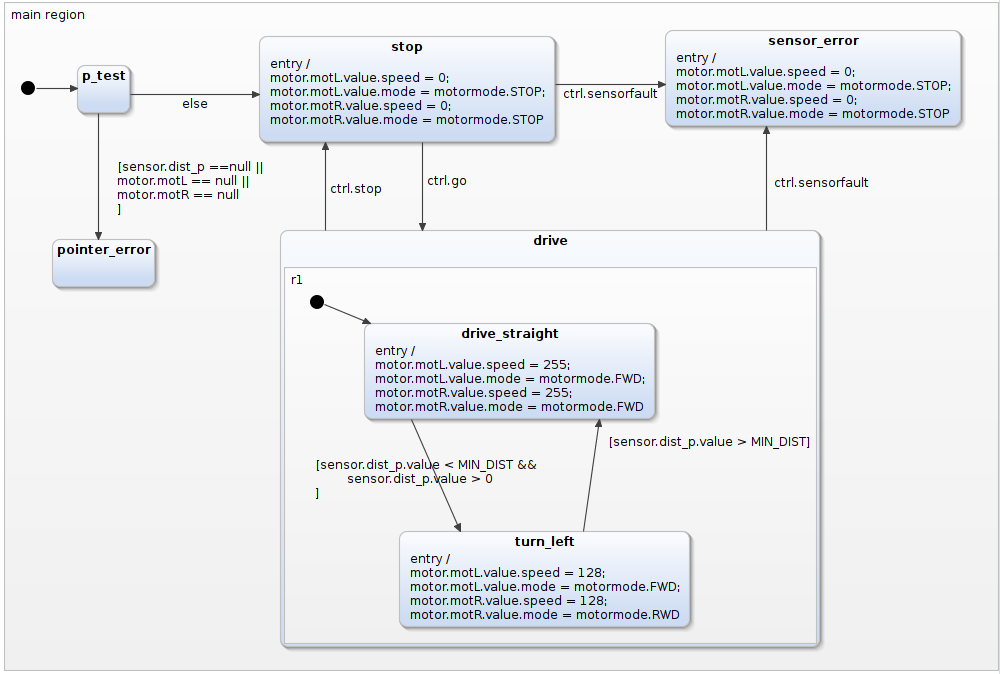
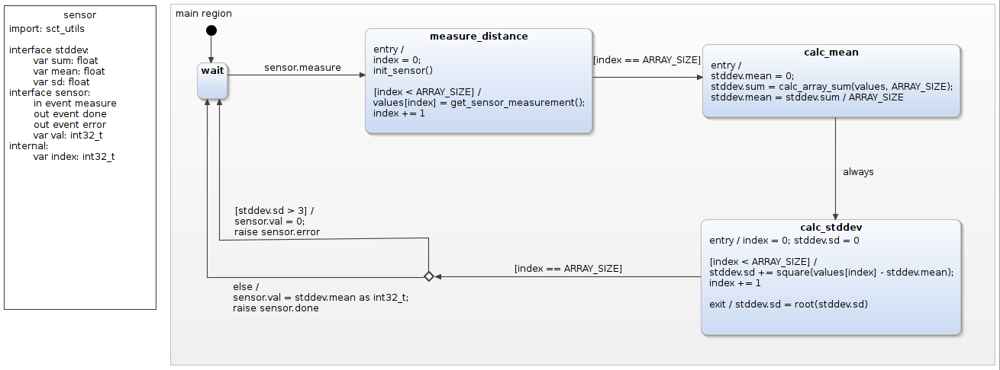

This example demonstrates the usage of arrays and pointers in YAKINDU SCT Professional Edition using Deep C Integration. It incorporates two statecharts that talk with each other, custom defined structs and types, and should be a good starting point for anyone who wants to learn about the Deep C Integration. No hardware needed, everything is simulated and mocked!
The example consists of two subsystems - there is a sensor that can measure the distance to objects in front of the robot, and a central control system.
The control system manages the robot, controls the motors, polls the sensor, and so on. It utilizes pointers to write data to structs controlling the motors and reading out the sensor measurement.
When the system encounters an object within a distance that is shorter than a value defined in a header file, it instructs the motors to turn the robot left. When the distance is large enough again, the robot drives straight.

The sensor itself waits for an event to start measuring. Then, it acquires five values, saves them in an array and calculates the mean and the standard deviation. All this is done directly in the statechart to demonstrate the different ways to manipulate arrays. When the standard deviation indicates a faulty measurement, the sensor raises an error event that could be used by an error management system, which is not included.
